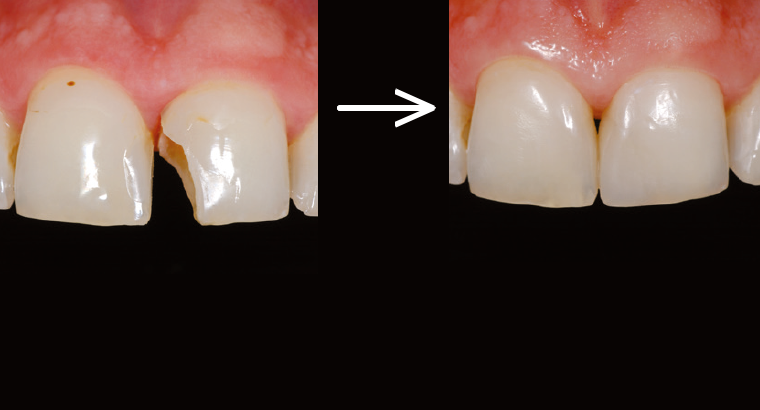
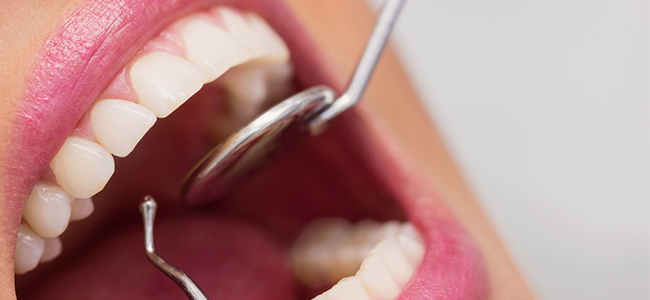

Oque é a Restauração
A restauração é o tratamento indicado para acabar com a cárie e com a dor de dente, em alguns casos. O dentista limpa toda a zona cariada e retira os tecidos atingidos com um aparelho próprio e coloca resina ou amálgama para cobrir a região, evitando o surgimento de novas cáries no mesmo local.


Para que serve a restauração no dente?
Essencialmente, restauração (ou obturação) é a reconstrução do dente, em que são utilizados materiais como resina, que é da cor do dente, ou amálgama, de cor prateada. A restauração é o tratamento indicado para acabar com a cárie e com a dor de dente, em alguns casos.